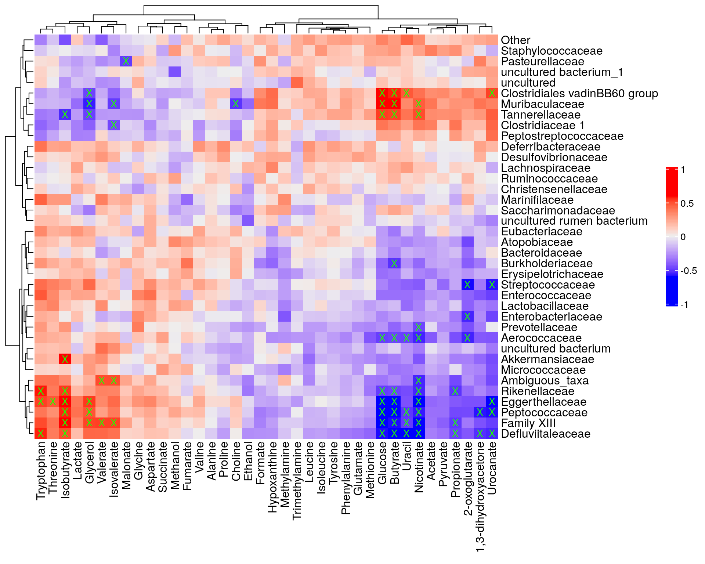
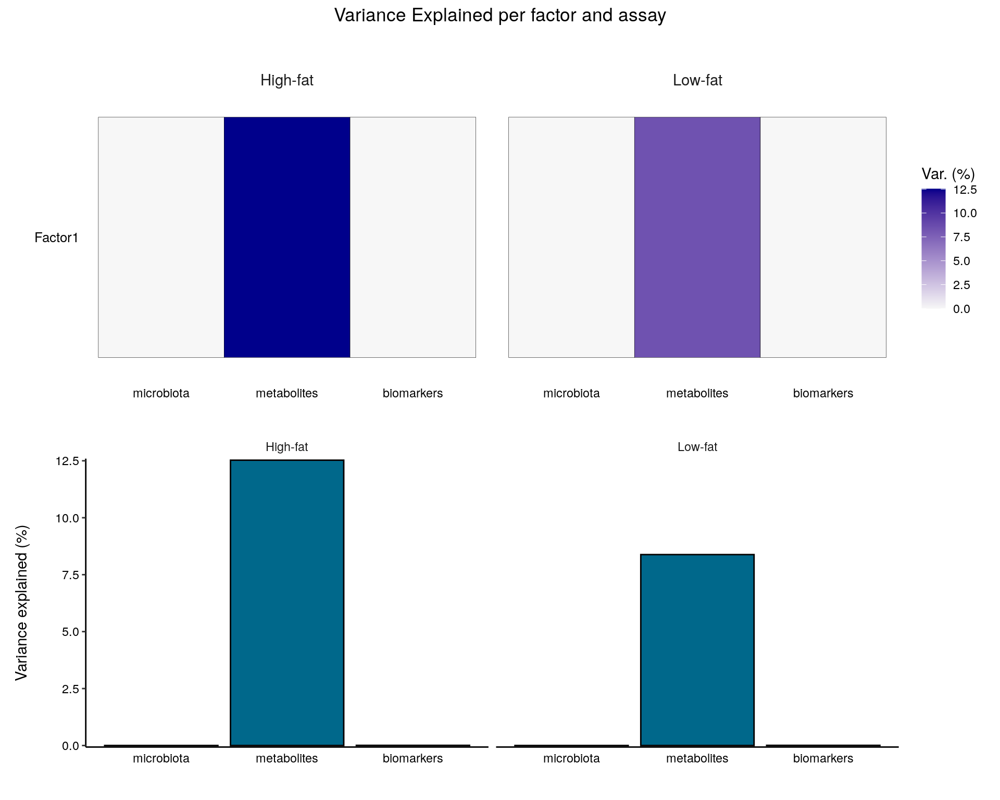
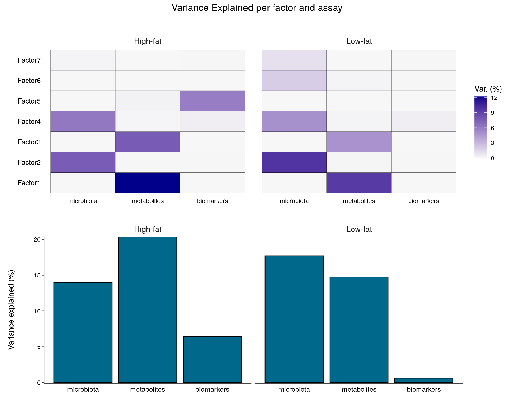

Chapter 13 Multi-assay analyses
library(mia)Multi-omics approaches integrate data from multiple sources. For example, we can integrate taxonomic abundance profiles with metabolomic or other biomolecular profiling data to observe associations, make predictions, or aim at causal inferences. Integrating evidence across multiple sources can lead to enhanced predictions, more holistic understanding, or facilitate the discovery of novel biomarkers. In this section we demonstrate common multi-assay data integration tasks.
Cross-correlation analysis is a straightforward approach that can reveal assocation strengths and types between data sets. For instance, we can analyze if higher presence of a specific taxon equals to higher levels of a biomolecule.
The analyse can be facilitated by the multi-assay data containers, TreeSummarizedExperiment and MultiAssayExperiment. These are scalable and contain different types of data in a single container, making this framework particularly suited for multi-assay microbiome data incorporating different types of complementary data sources in a single reproducible workflow. Th different solutions for varying data integration needs are discussed in more detail in Section 3. Another experiment can be stored in altExp slot of SE data container or both experiments can be stored side-by-side in MAE data container (see the sections 3.2.5 and 3.2.6 to learn more about altExp and MAE objects, respectively). Different experiments are first imported into these data containers similarly to the case when only one experiment is present. After that, the different experiments can be combined into the same multi-assay data container. The result is one TreeSE object with alternative experiment in altExp slot, or MAE object with multiple experiment in its experiment slot, for instance.
As an example data, we use data from the following publication: Hintikka L et al. (2021) Xylo-oligosaccharides in prevention of hepatic steatosis and adipose tissue inflammation: associating taxonomic and metabolomic patterns in fecal microbiota with biclustering
In this study, mice were fed with high-fat and low-fat diets with or without prebiotics. The purpose of this was to study whether prebiotics reduce negative impacts of a high-fat diet.
This example data can be loaded from microbiomeDataSets. The data is already in MAE format. It includes three different experiments: microbial abundance data, metabolite concentrations, and data about different biomarkers. ======= (Hintikka et al. 2021). In this article, mice were fed with high-fat and low-fat diets with or without prebiotics. The purpose of this was to study if prebiotics would reduce the negative impact of high-fat diet.
This example data is readily available in the MultiAssayExperiment format. It includes three different experiments: microbial abundance data, metabolite concentrations, and data about different biomarkers. If you like to construct the same data object from the original files instead, Here you can find help for importing data into a SE object.
# Load the data
data(HintikkaXOData, package = "mia")
mae <- HintikkaXOData
mae## A MultiAssayExperiment object of 3 listed
## experiments with user-defined names and respective classes.
## Containing an ExperimentList class object of length 3:
## [1] microbiota: TreeSummarizedExperiment with 12706 rows and 40 columns
## [2] metabolites: TreeSummarizedExperiment with 38 rows and 40 columns
## [3] biomarkers: TreeSummarizedExperiment with 39 rows and 40 columns
## Functionality:
## experiments() - obtain the ExperimentList instance
## colData() - the primary/phenotype DataFrame
## sampleMap() - the sample coordination DataFrame
## `$`, `[`, `[[` - extract colData columns, subset, or experiment
## *Format() - convert into a long or wide DataFrame
## assays() - convert ExperimentList to a SimpleList of matrices
## exportClass() - save data to flat filesif(!require(stringr)){
install.packages("stringr")
library(stringr)
}
# Drop off those bacteria that do not include information in Phylum or lower levels
mae[[1]] <- mae[[1]][!is.na(rowData(mae[[1]])$Phylum), ]
# Clean taxonomy data, so that names do not include additional characters
rowData(mae[[1]]) <- DataFrame(apply(rowData(mae[[1]]), 2,
str_remove, pattern = "._[0-9]__"))
# Microbiome data
mae[[1]]## class: TreeSummarizedExperiment
## dim: 12613 40
## metadata(0):
## assays(1): counts
## rownames(12613): GAYR01026362.62.2014 CVJT01000011.50.2173 ...
## JRJTB:03787:02429 JRJTB:03787:02478
## rowData names(7): Phylum Class ... Species OTU
## colnames(40): C1 C2 ... C39 C40
## colData names(0):
## reducedDimNames(0):
## mainExpName: NULL
## altExpNames(0):
## rowLinks: NULL
## rowTree: NULL
## colLinks: NULL
## colTree: NULL# Metabolite data
mae[[2]]## class: TreeSummarizedExperiment
## dim: 38 40
## metadata(0):
## assays(1): nmr
## rownames(38): Butyrate Acetate ... Malonate 1,3-dihydroxyacetone
## rowData names(0):
## colnames(40): C1 C2 ... C39 C40
## colData names(0):
## reducedDimNames(0):
## mainExpName: NULL
## altExpNames(0):
## rowLinks: NULL
## rowTree: NULL
## colLinks: NULL
## colTree: NULL# Biomarker data
mae[[3]]## class: TreeSummarizedExperiment
## dim: 39 40
## metadata(0):
## assays(1): signals
## rownames(39): Triglycerides_liver CLSs_epi ... NPY_serum Glycogen_liver
## rowData names(0):
## colnames(40): C1 C2 ... C39 C40
## colData names(0):
## reducedDimNames(0):
## mainExpName: NULL
## altExpNames(0):
## rowLinks: NULL
## rowTree: NULL
## colLinks: NULL
## colTree: NULL13.1 Cross-correlation Analysis
Next we can do the cross-correlation analysis. Let us analyse if individual bacteria genera correlates with concentrations of individual metabolites. This helps to answer the question: “If this bacteria is present, is this metabolite’s concentration then low or high”?
# Agglomerate microbiome data at family level
mae[[1]] <- agglomerateByPrevalence(mae[[1]], rank = "Family")
# Does log10 transform for microbiome data
mae[[1]] <- transformCounts(mae[[1]], method = "log10", pseudocount = 1)
# Give unique names so that we do not have problems when we are creating a plot
rownames(mae[[1]]) <- getTaxonomyLabels(mae[[1]])
# Cross correlates data sets
correlations <- testExperimentCrossCorrelation(mae,
experiment1 = 1,
experiment2 = 2,
assay_name1 = "log10",
assay_name2 = "nmr",
method = "spearman",
p_adj_threshold = NULL,
cor_threshold = NULL,
# Remove when mia is fixed
mode = "matrix",
sort = TRUE,
show_warnings = FALSE)Creates the heatmap
if( !require("ComplexHeatmap") ){
BiocManager::install("ComplexHeatmap")
library("ComplexHeatmap")
}
# Create a heatmap and store it
plot <- Heatmap(correlations$cor,
# Print values to cells
cell_fun = function(j, i, x, y, width, height, fill) {
# If the p-value is under threshold
if( !is.na(correlations$p_adj[i, j]) & correlations$p_adj[i, j] < 0.05 ){
# Print "X"
grid.text(sprintf("%s", "X"), x, y, gp = gpar(fontsize = 8, col = "black"))
}
},
heatmap_legend_param = list(title = "", legend_height = unit(5, "cm"))
)
plot
13.2 Multi-Omics Factor Analysis
Multi-Omics Factor Analysis (Argelaguet 2018) (MOFA) is an unsupervised method for integrating multi-omic data sets in a downstream analysis. It could be seen as a generalization of principal component analysis. Yet, with the ability to infer a latent (low-dimensional) representation, shared among the multiple (-omics) data sets in hand.
We use the R MOFA2 package for the analysis, and install the corresponding dependencies.
if(!require(MOFA2)){
BiocManager::install("MOFA2")
}
# For inter-operability between Python and R, and setting Python dependencies,
# reticulate package is needed
if(!require(reticulate)){
install.packages("reticulate")
}
# Let us assume that these have been installed already.
#reticulate::install_miniconda(force = TRUE)
#reticulate::use_miniconda(condaenv = "env1", required = FALSE)
#reticulate::py_install(packages = c("mofapy2"), pip = TRUE, python_version=3.6)The mae object could be used straight to create the MOFA model. Yet,
we transform our assays since the model assumes normality per
default. We can also use Poisson or Bernoulli distributions among others.
library(MOFA2)
# For simplicity, classify all high-fat diets as high-fat, and all the low-fat
# diets as low-fat diets
colData(mae)$Diet <- ifelse(colData(mae)$Diet == "High-fat" |
colData(mae)$Diet == "High-fat + XOS",
"High-fat", "Low-fat")
# Removing duplicates at the microbiome data
# which are also in form e.g. "Ambiguous" and "uncultured" taxa
mae[[1]] <- mae[[1]][!duplicated(rownames(assay(mae[[1]]))), ]
# Transforming microbiome data with rclr
mae[[1]] <- transformCounts(mae[[1]], method = "relabundance")
mae[[1]] <- transformCounts(mae[[1]], assay_name = "relabundance", method = "rclr")
# Transforming metabolomic data with log10
mae[[2]] <- transformCounts(mae[[2]], assay_name = "nmr",
MARGIN = "samples",
method = "log10")
# Transforming biomarker data with z-transform
mae[[3]] <- transformCounts(mae[[3]], assay_name = "signals",
MARGIN = "features",
method = "z", pseudocount = 1)
# Removing assays no longer needed
assay(mae[[1]], "counts") <- NULL
assay(mae[[1]], "log10") <- NULL
assay(mae[[2]], "nmr") <- NULL
assay(mae[[3]], "signals") <- NULL
# Building our mofa model
model <- create_mofa_from_MultiAssayExperiment(mae,
groups = "Diet",
extract_metadata = TRUE)
model## Untrained MOFA model with the following characteristics:
## Number of views: 3
## Views names: microbiota metabolites biomarkers
## Number of features (per view): 38 38 39
## Number of groups: 2
## Groups names: High-fat Low-fat
## Number of samples (per group): 20 20
## Model options could be defined as follows:
model_opts <- get_default_model_options(model)
model_opts$num_factors <- 5
head(model_opts)## $likelihoods
## microbiota metabolites biomarkers
## "gaussian" "gaussian" "gaussian"
##
## $num_factors
## [1] 5
##
## $spikeslab_factors
## [1] FALSE
##
## $spikeslab_weights
## [1] FALSE
##
## $ard_factors
## [1] TRUE
##
## $ard_weights
## [1] TRUEModel’s training options are defined with the following:
train_opts <- get_default_training_options(model)
head(train_opts)## $maxiter
## [1] 1000
##
## $convergence_mode
## [1] "fast"
##
## $drop_factor_threshold
## [1] -1
##
## $verbose
## [1] FALSE
##
## $startELBO
## [1] 1
##
## $freqELBO
## [1] 5Preparing and training the model:
model.prepared <- prepare_mofa(
object = model,
model_options = model_opts
)
# Some systems may require the specification `use_basilisk = TRUE`
# so it has been added to the following code
model.trained <- run_mofa(model.prepared, use_basilisk = TRUE)Visualizing the variance explained:
library(patchwork)
library(ggplot2)
wrap_plots(
plot_variance_explained(model.trained, x="view", y="factor", plot_total = T),
nrow = 2
) + plot_annotation(title = "Variance Explained per factor and assay",
theme = theme(plot.title = element_text(hjust = 0.5)))
The top weights for each assay using all five factors:
plots <- lapply(c("microbiota", "metabolites","biomarkers"), function(name) {
plot_top_weights(model.trained,
view = name,
factors = "all",
nfeatures = 10) +
labs(title = paste0("Top weights of the ", name," assay"))
})
wrap_plots(plots, nrow = 3) & theme(text = element_text(size = 8))
More tutorials and examples of using the package are found at link
Session Info
R version 4.3.0 (2023-04-21)
Platform: x86_64-pc-linux-gnu (64-bit)
Running under: Ubuntu 22.04.2 LTS
Matrix products: default
BLAS: /usr/lib/x86_64-linux-gnu/openblas-pthread/libblas.so.3
LAPACK: /usr/lib/x86_64-linux-gnu/openblas-pthread/libopenblasp-r0.3.20.so; LAPACK version 3.10.0
locale:
[1] LC_CTYPE=en_US.UTF-8 LC_NUMERIC=C
[3] LC_TIME=en_US.UTF-8 LC_COLLATE=en_US.UTF-8
[5] LC_MONETARY=en_US.UTF-8 LC_MESSAGES=en_US.UTF-8
[7] LC_PAPER=en_US.UTF-8 LC_NAME=C
[9] LC_ADDRESS=C LC_TELEPHONE=C
[11] LC_MEASUREMENT=en_US.UTF-8 LC_IDENTIFICATION=C
time zone: UTC
tzcode source: system (glibc)
attached base packages:
[1] grid stats4 stats graphics grDevices utils datasets
[8] methods base
other attached packages:
[1] ggplot2_3.4.2 patchwork_1.1.2
[3] reticulate_1.28 MOFA2_1.10.0
[5] ComplexHeatmap_2.16.0 stringr_1.5.0
[7] mia_1.9.2 MultiAssayExperiment_1.26.0
[9] TreeSummarizedExperiment_2.1.4 Biostrings_2.68.0
[11] XVector_0.40.0 SingleCellExperiment_1.22.0
[13] SummarizedExperiment_1.30.0 Biobase_2.60.0
[15] GenomicRanges_1.52.0 GenomeInfoDb_1.36.0
[17] IRanges_2.34.0 S4Vectors_0.38.0
[19] BiocGenerics_0.46.0 MatrixGenerics_1.12.0
[21] matrixStats_0.63.0-9003 BiocStyle_2.28.0
[23] rebook_1.9.0
loaded via a namespace (and not attached):
[1] RColorBrewer_1.1-3 jsonlite_1.8.4
[3] shape_1.4.6 CodeDepends_0.6.5
[5] magrittr_2.0.3 ggbeeswarm_0.7.1
[7] farver_2.1.1 corrplot_0.92
[9] rmarkdown_2.21 GlobalOptions_0.1.2
[11] zlibbioc_1.46.0 vctrs_0.6.2
[13] memoise_2.0.1 Cairo_1.6-0
[15] DelayedMatrixStats_1.22.0 RCurl_1.98-1.12
[17] forcats_1.0.0 htmltools_0.5.5
[19] BiocBaseUtils_1.2.0 BiocNeighbors_1.18.0
[21] Rhdf5lib_1.22.0 rhdf5_2.44.0
[23] sass_0.4.5 bslib_0.4.2
[25] basilisk_1.12.0 plyr_1.8.8
[27] DECIPHER_2.28.0 cachem_1.0.7
[29] lifecycle_1.0.3 iterators_1.0.14
[31] pkgconfig_2.0.3 rsvd_1.0.5
[33] Matrix_1.5-4 R6_2.5.1
[35] fastmap_1.1.1 GenomeInfoDbData_1.2.10
[37] clue_0.3-64 digest_0.6.31
[39] colorspace_2.1-0 rprojroot_2.0.3
[41] scater_1.28.0 irlba_2.3.5.1
[43] RSQLite_2.3.1 vegan_2.6-4
[45] beachmat_2.16.0 labeling_0.4.2
[47] filelock_1.0.2 fansi_1.0.4
[49] mgcv_1.8-42 compiler_4.3.0
[51] here_1.0.1 bit64_4.0.5
[53] withr_2.5.0 doParallel_1.0.17
[55] BiocParallel_1.34.0 viridis_0.6.2
[57] DBI_1.1.3 highr_0.10
[59] HDF5Array_1.28.0 MASS_7.3-59
[61] DelayedArray_0.25.0 rjson_0.2.21
[63] permute_0.9-7 tools_4.3.0
[65] vipor_0.4.5 beeswarm_0.4.0
[67] ape_5.7-1 glue_1.6.2
[69] rhdf5filters_1.12.0 nlme_3.1-162
[71] Rtsne_0.16 cluster_2.1.4
[73] reshape2_1.4.4 generics_0.1.3
[75] gtable_0.3.3 tidyr_1.3.0
[77] BiocSingular_1.16.0 ScaledMatrix_1.7.1
[79] utf8_1.2.3 ggrepel_0.9.3
[81] foreach_1.5.2 pillar_1.9.0
[83] yulab.utils_0.0.6 circlize_0.4.15
[85] splines_4.3.0 dplyr_1.1.2
[87] treeio_1.24.0 lattice_0.21-8
[89] bit_4.0.5 tidyselect_1.2.0
[91] DirichletMultinomial_1.42.0 scuttle_1.10.0
[93] knitr_1.42 gridExtra_2.3
[95] bookdown_0.33 xfun_0.39
[97] pheatmap_1.0.12 stringi_1.7.12
[99] lazyeval_0.2.2 yaml_2.3.7
[101] evaluate_0.20 codetools_0.2-19
[103] tibble_3.2.1 BiocManager_1.30.20
[105] graph_1.78.0 cli_3.6.1
[107] uwot_0.1.14 munsell_0.5.0
[109] jquerylib_0.1.4 Rcpp_1.0.10
[111] dir.expiry_1.8.0 png_0.1-8
[113] XML_3.99-0.14 parallel_4.3.0
[115] blob_1.2.4 basilisk.utils_1.12.0
[117] sparseMatrixStats_1.12.0 bitops_1.0-7
[119] decontam_1.20.0 viridisLite_0.4.1
[121] tidytree_0.4.2 scales_1.2.1
[123] purrr_1.0.1 crayon_1.5.2
[125] GetoptLong_1.0.5 rlang_1.1.0
[127] cowplot_1.1.1